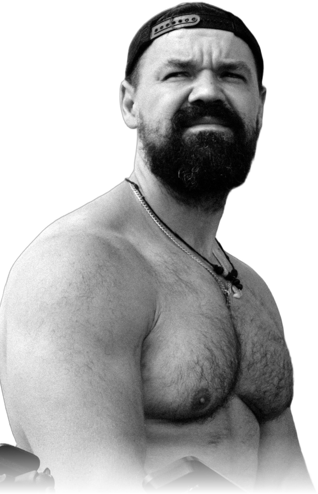

Personal training
онлайн
реальная физиология
Для кого это
→
Узнаёте себя
Если вы узнаёте себя хотя бы в одном пункте:
→
- Хотите изменить тело, но уже устали от универсальных программ
- Есть ограничения: колени, спина, грыжи, восстановление после операций
- Лишний вес, и от типовых программ больше тревоги, чем пользы: непонятно, как нагружаться без риска
- После изменений в организме (в т.ч. гормональные изменения) прежние схемы перестали работать
- Принимаете поддержку (в т.ч. пептиды) и хотите, чтобы нагрузка и питание это учитывали
- Нужен человек, который видит картину целиком: тренировки, еда, анализы, самочувствие, режим
←
Главное
Не «для идеальных». Для реальных людей с реальной физиологией.
Готовы начать
Напиши в
директ
→